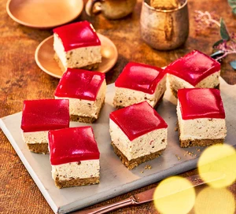

Cheesecake recipe

Description
Cheesecake is a beloved dessert around the world. While many assume that
it has its origins in New York, it actually dates back much further. Let's
go back over 4,000 years to ancient Greece! Sit back, grab a creamy slice
of cheesecake and learn all about this dessert’s rich history.
Each region of the world also has its own take on the best way to make the
dessert. Italians use ricotta cheese, while the Greeks use mizithra or
feta. Germans prefer cottage cheese, while the Japanese use a combination
of cornstarch and egg whites. There are specialty cheesecakes that include
blue cheese, seafood, spicy chilies and even tofu! In spite of all the
variations, the popular dessert’s main ingredients – cheese, wheat and a
sweetener –remain the same.
Ingredients
- 100g butter
- 250g digestive biscuits, crushed into fine crumbs
- 500g full-fat soft cheese
- 100g icing sugar
- 237g crunchy peanut butter
- 1 tsp vanilla extract
- 300ml double cream
- 4 cubes raspberry jelly, chopped into smaller chunks
- 200g frozen raspberries, defrosted
- 1 tbsp caster sugar
Steps
-
Line an 18-20cm square baking tin with a strip of baking parchment,
leaving the ends overhanging – this will help you lift the cheesecake
out later. Put the butter in a large heatproof bowl that has a wide lip
and set over a smaller heatproof bowl filled with boiling water from the
kettle. Leave to stand for a minute, then stir until completely smooth.
Stir in the crushed biscuits, then spoon the mixture into the prepared
tin, pressing it down using the back of a spoon.
-
Beat the soft cheese, icing sugar, peanut butter and vanilla together in
a bowl until well combined. Whisk the double cream in a separate bowl
until it’s just holding its shape. Gently fold this into the peanut
butter mixture, then spread over the biscuit base and smooth the surface
using the back of a spoon. Chill for at least 1 hr to set. Will keep
chilled for up to one day.
-
Meanwhile, tip the jelly cubes into a heatproof bowl and pour over 100ml
boiling water. Stir to dissolve, then add the raspberries and sugar and
stir, crushing the berries with the spoon. Push through a sieve into a
jug, then pour this over the set cheesecake. Chill for at least 4hrs.
Will keep chilled for up to two days. Run a knife around the sides, then
use the overhanging parchment to lift the cheesecake onto a board. Cut
into squares.